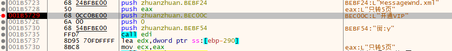

转转大师v6.0.0.6破解
在写简历时，需要一遍遍的完善，转pdf看看效果，但是百度文库转的格式不行，下载了转转大师，但是非会员有次数限制，寻思能不能绕过，再写博客的时候，复现一下，一不小心就直接解锁了，现在所有的功能登录即可使用；
zhuanzhuan
1.先查壳，无壳；妙哉。
2.问题：直接开始调试会先走许多库函数进行程序加载，比较慢
解决：直接将软件运行起来，用x64dbg附加上去。注意管理员打开
3.开始调试：
首先打开软件，找到需要的模块，找到zhuanzhuan进程附加，附加上去之后等一会，看到栈窗口稳定了，这时候看到代码段还不在用户领空，这时候找到符号，选中用户模块，就来到了用户模块
看到开头有三个call函数，这里都下断，看一下能断在那里

这时候发现程序断不下来，麻了；猜测原因，这时候去附加的话，程序已经完成了会员登录与否的判断，基本的程序也加载了，所以这次直接程序开始运行就附加上去
保持上述断点，在call的函数里面下断点，因为不知道有没有别的调用。
在这里就开始附加，点击文件转pdf，程序直接断在了刚刚的第二个call的断点上
F9两次，程序正常开始
添加文件，程序又回到刚刚的断点，F8单步配合F9，成功选中文件，程序断在了
f9，观察程序窗口，正常之后点击开始转换，程序又断在第一次断的地方，思路断了
看下当前模块的字符串
发现：
一堆开通VIP，这里猜测应该是对应了不同的模块，挨个进去看看上下文注释，有的有，有的没有，直接全下断点。断在一个地方

这里就是对应着我的word2pdf，看一下上下文
下文：
这里的call出现弹窗，可选的，下面的cmp引人注目，选择只转五页的选项，jnz跳转到一处地址，下断。jnz跳转的地方就可以正常的执行转换，虽然只有五页。这里迷惑的是如何判断的会员身份，没有找到判断逻辑。
再看到上下文，寻找大跳转，看看能不能跳过弹窗。找到一处JE

直接跳过了弹窗生成，
这一块代码通过判断eax，然后对bl赋值，最后检测bl，非零跳转到刚刚进入转换程序的那里
看到eax的值通过函数
得到。
思路：将setge改为setle指令（不行），分析eax的函数，一个对eax的修改，看看能不能改后面的
下面有一个对bl的判断，进行修改：
将原来的
1 | test bl , bl |
改完之后patch文件，运行，发现在开始转换的时候，她不会弹窗，但是再转换结束之后，还是会进行弹窗，继续看一下程序（减号可以回到上一步的显示）
思路n：通过修改eax来绕过，还是算啦吧
把所有的vip提示都下断点，然后运行，转化之后断在了这里
上下文分析，跳转比较多，这里发现不论选什么，都会跳出付款界面，于是找到函数头，断下来，把前面的断点去一下，然后重新调试，
发现不少的跳转这都会跳到最后的结尾，思路就是一个个的试一试，然后程序就死了，这样就还是回到eax上，找到那个修改eax的函数，

这里把她都改成1，然后patch之后，惊喜的发现程序可以转5页+了成功了
复盘一下：
找到程序的代码段，首先跳过开始的弹窗（不要改lock指令下的跳转），然后再找到setgn bl指令上的对eax修改的函数，进去之后把他们改成1，完成【这是对与word2pdf的转换，别的模块可能相似】
先改1，跳开始窗口
再改
看一下这个函数会被执行多少次，判断是不是一个全局的判断函数，还是模块特有的，是模块特有的，根据相似思路，对别的模块进行分析
合并pdf的功能会弹窗，但是正常执行，忍一忍吧，实在没找到那里改，图片压缩不会带水印的，虽然弹窗有提示
我的版本是最新版6.0.0.6，仅供学习使用